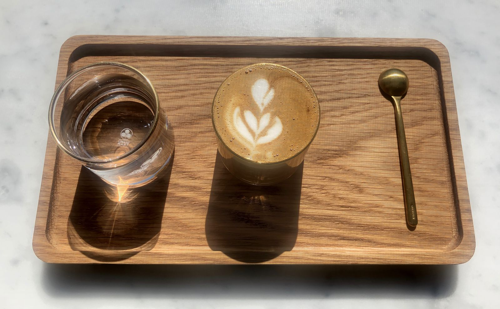
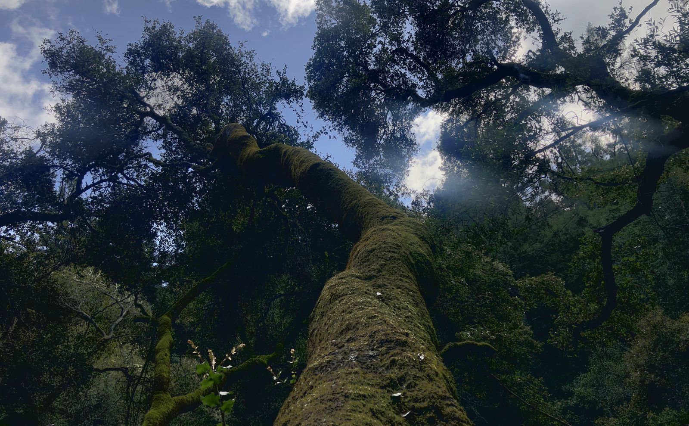
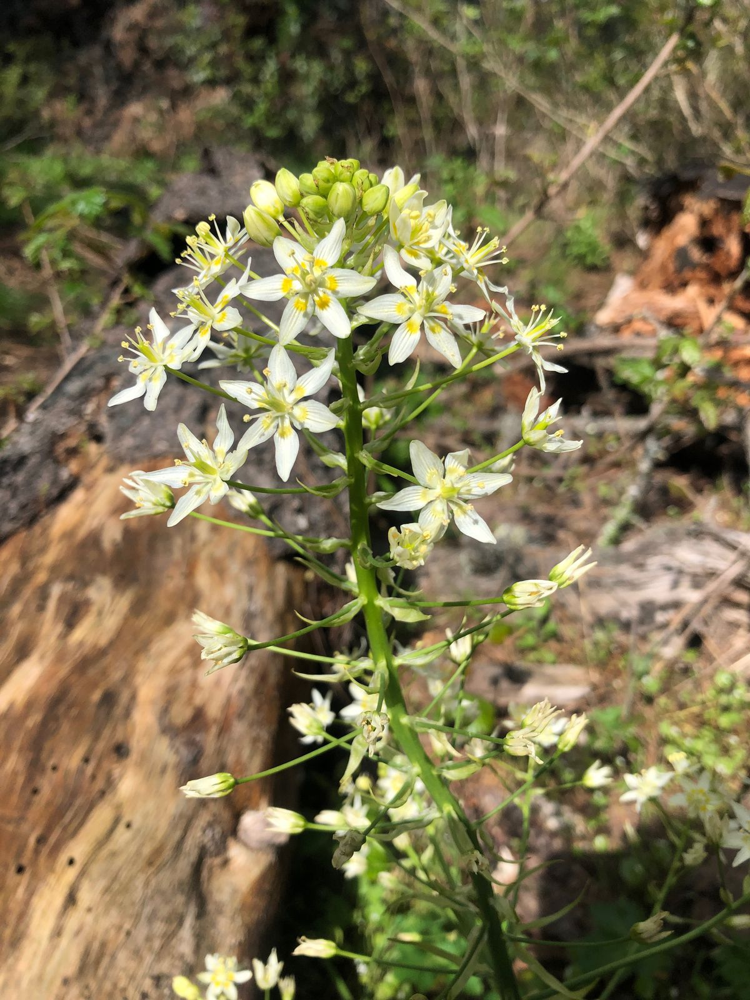
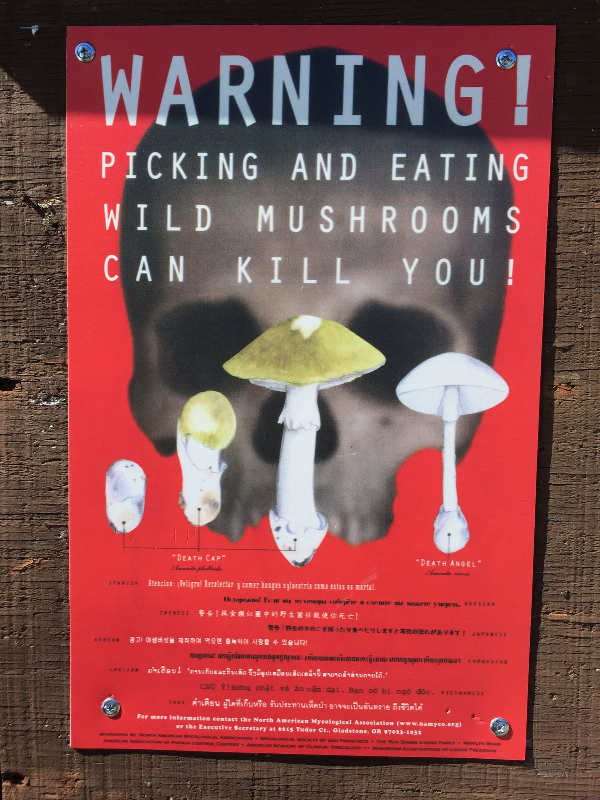
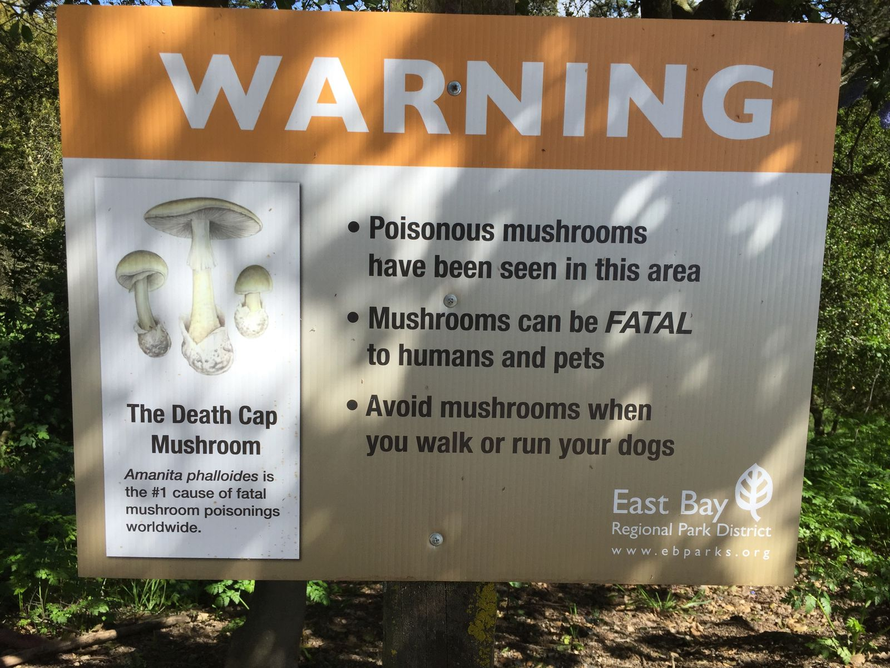
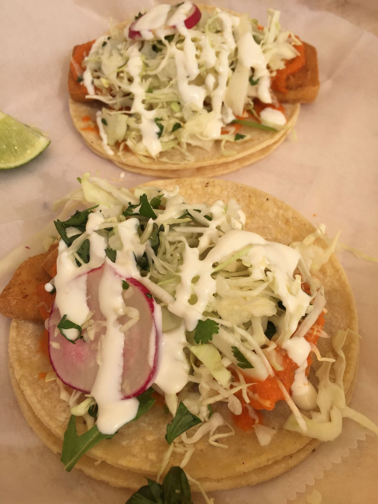

A Day in Oakland
I expected that today would be a good day and it was. After sleeping a good 8 hours, Will and I departed to Firebrand Artisan Breads for pastries and Royal Coffee for coffee. My banana walnut muffin and passionfruit Kouign Amann were delicious and the coffee place was unlike anything I had seen before. Behind the café were two rooms with large glass windows for walls. One room was the roasting facility and another was a training room with all kinds of coffee making equipment. For each of the coffee offerings on the menu, I could choose between about a dozen different beans. Because I don't like making decisions, I just got exactly the same thing as Will did: a cortadito. Don't ask me which bean and roast we got because I don't remember.

Next up, we went on a moderate 8 mile, 1000 ft elevation hike in Redwood Regional Park in Oakland. The French Trail and Stream Trail Loop took us along a stream and ridge. There were lots of ups and downs and we saw several dogs along the way. It ended up being a good 4 hour exercise and adventure in nature. For most the trail, large redwoods shaded the path.




When we were done with the hike, we decided that it was time for tacos. After hiking, getting tacos is always a good idea. We went to Cholita Linda in Temescal and ate so much food. We then decided that so much food was not enough to we went across the street to Curbside Creamery for ice cream.

The day ended back at Will's house, where we had some time to unwind and I did another load of laundry. I decided to break up my trip a bit further so that I don't have to do any 9 hour drives in one day. Tomorrow, after stopping by REI to pick up some trekking poles, I'll head north to Point Reyes for an easy hike and to Mendocino to check out the glass beach. I end the day in Fort Bragg, where I am staying for the night.